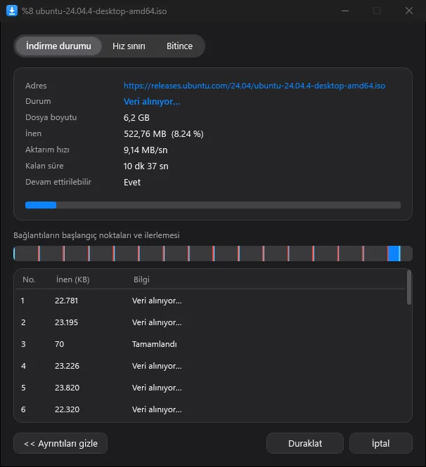

Windows için masaüstü uygulamaları ve yapay zeka ajanları yazıyorum. Arkamda dört yıllık BT denetimi var; bu yüzden araçlarımın çoğu riskli bir işlemden önce onay ister.
Elektrik-Elektronik Mühendisliği, İstanbul Aydın Üniversitesi, 2022
Mühendislik, denetim ve yazılım.
Elektrik-Elektronik Mühendisiyim. Çoklu ajan koordinasyonu, araç kullanan ajanlar, MCP entegrasyonları, FastAPI ve React ile uçtan uca araçlar kuruyorum. İstanbul Aydın Üniversitesi Elektrik-Elektronik Mühendisliği bölümünden 2022’de mezun oldum.
Bulut ve yerel modellerle çalışan ajanlar, 38’den fazla ajanı koordine eden bir çerçeve, ChromaDB üzerinde kalıcı bellek ve FastAPI/WebSocket arka uçları geliştirdim. Gereksinimlerin hızlı değiştiği deneme işlerinde bağımsız çalışmayı seviyorum.
Dört yıllık BT denetimi geçmişim var: KPMG Türkiye’de 10’dan fazla banka ve finans kuruluşunda BTGC denetimi, AlternatifBank’ta BDDK kapsamında denetim ve Python otomasyonu, Crybo ve Yapı Kredi Kripto’da kripto varlık sektöründe BT denetimi ve GRC. Bu deneyim bana yapılandırılmış problem analizi ve açık raporlama alışkanlığı kazandırdı.
Kısaca
BT denetimi
4 yıl
Yazılım geliştirme
2 yıl
Yapay zeka geliştirme ve entegrasyonu
2 yıl
BTGC denetimi yapılan banka ve finans kuruluşu
10+
Koordinasyon çerçevesindeki ajan
38+
Mesleki sertifika
45+
Denetimden yapay zekaya uzanan yol.
·
BT Denetim Uzmanı
Infonal Bilgi Teknolojileri A.Ş., Yapı Kredi Kripto görevlendirmesi
Kripto varlık hizmet sağlayıcısında SPK bilgi sistemleri gereklilikleri kapsamında BT denetimi ve GRC çalışmaları.
·
BT Denetim Uzmanı
Crybo Kripto Varlık Alım Satım Platformu A.Ş.
Kripto varlık operasyonlarında BT iç denetim ve iç kontrol süreçleri.
·
Yönetmen Yardımcısı, BT Kontrol ve Veri Analitiği
AlternatifBank
BDDK düzenlemeleri kapsamında periyodik BT sistem ve süreç denetimleri.
10’dan fazla banka ve finans kuruluşunda BTGC denetimleri.
Stajlar
Yazılım Teknolojileri Stajyeri
Ribon Software Technologies
Tasarım Mühendisliği Ofisi Stajyeri
Tersan Tersanesi
Stajyer
AnelGroup, AnelSis Ltd.
Kendi yazdığım uygulamalar, ajanlar ve araçlar.
Çoğu her gün kendi bilgisayarımda çalışıyor. Kaynağı açık olanların GitHub bağlantısı var; özel depolar işaretli.
Ağaç Boyutu
Masaüstü
Ağaç Boyutu
Yaklaşım Boyut çubuklu ağacın yanında kareleştirilmiş ağaç haritası var; silme yalnızca Geri Dönüşüm Kutusu’na gider ve sistem kökleri korunur.
Windows için disk alanı analiz aracı. Klasörleri boyut çubuklu bir ağaçta ve ağaç haritasında gösterir; dosya türleri, en büyük 100 dosya, CSV ve HTML dışa aktarma var. Silme her zaman onay ister, sistem klasörleri korunur.
Yaklaşım Bölmeler yalnızca referans tutar: masaüstündeki dosyalar taşınmaz, silinmez, adı değişmez; uygulama kapanınca simgeler eski yerine döner.
Masaüstü simgelerini yarı saydam bölmelerde toplayan düzenleyici. Kurallarla yeni dosyaları doğru bölmeye koyar; klasör portalı, sayfalar, anlık düzen kayıtları ve monitör başına yerleşim var. Dosyalar taşınmaz, bölmeler yalnızca referans tutar.
Neden Büyük klasörleri harici diske taşırken Gezgin yavaş kalıyor ve takılınca nedenini söylemiyordu.
Sağ tık menüsüne Robocopy ile kopyala ve yapıştır ekler. Kopyalamayı robocopy yapar, ilerlemeyi Windows’un kendi penceresine benzeyen bir pencerede hız grafiği ve kalan süreyle gösterir. Hiçbir şey silmez.
C#, WPF, Robocopy
Özel depo
Hızlı İndir

Masaüstü
Hızlı İndir
Yaklaşım Her bağlantı kendi bölümünü tek dosyada doğrudan yerine yazar; bitince parça birleştirme beklemesi olmaz. Bir bölüm bitince en büyük kalan bölüm ikiye bölünür.
Çok bağlantılı indirme yöneticisi. Dosyayı bölümlere ayırıp paralel indirir; Chrome ve Edge eklentisiyle tarayıcıdaki indirmeleri ve videoları yakalar. Kod sıfırdan yazıldı.
C#, WPF, .NET 8
Özel depo
V.A.U.L.T. // B.R.E.A.C.H.
Ajan ve yapay zeka
V.A.U.L.T. // B.R.E.A.C.H.
Bulut LLM API’leri ya da yerel LM Studio modeliyle çalışan ajan arayüzü. Bellek, web, dosya ve komut araçları var; riskli işlemler onay istiyor. Görevleri Claude, Gemini ve Codex CLI araçlarına devredebiliyor.
Windows 11 için macOS tarzı dock. Simgeler üzerine gelince büyür, pencereler Genie efektiyle küçülür; üstte menü çubuğu, yanda ses ve sistem panelleri vardır.
Tek dosyalık Windows masaüstü asistanı. Sohbet eder, dosya okur ve yazar, web’de arar, PowerShell çalıştırır; dosya yazmadan ve komut çalıştırmadan önce onay ister. Anahtar Windows DPAPI ile şifreli tutulur.
PS5 ana ekranına benzeyen oyun başlatıcı (resmi değildir). Oyunları, emülatörleri ve kısayolları büyük kapaklarla tek ekranda toplar; kumanda ve klavyeyle gezilir, oynama süreleri tutulur.
Marvel Rivals için ekran görüntüsünden takımları okuyup karşı takıma göre kahraman öneren yardımcı (resmi değildir). Oyunun belleğine ya da dosyalarına dokunmaz.
Uyku moduna geçen televizyonu Windows ekran düzeninden tek tıkla çıkarır ve aynı konumla geri ekler; TV’yi ekran numarasından değil EDID bilgisinden tanır.
Claude Code oturumlarının özetini ve asistanların gece notlarını ortak bir Drive klasöründe buluşturur; her oturum bir öncekinin kaldığı yerden başlar.
JavaScript, Claude Code hooks
Özel depo
Çoklu ajan koordinasyon çerçevesi
Ajan ve yapay zeka
38’den fazla uzman ajan arasında paralel görev yürütme, ortak bellek ve çok adımlı otomasyon akışları.
Claude Code CLI, MCP, Node.js, Bash hooks
Bağlantı yok
MemPalace: kalıcı bellek
Ajan ve yapay zeka
Ajanlar için kalıcı bellek. Notlar MiniLM ve Gemma ile vektöre çevrilip ChromaDB’de tutuluyor, HNSW indeksiyle anlamsal arama yapılıyor; ajanlar bağlamı MCP üzerinden alıyor.
Notaları kulaktan tanımayı öğreten sade PWA. Büyük düğmeler, süre baskısı yok; doğru cevap verdikçe yeni notalar açılır ve ilk açılıştan sonra internetsiz çalışır.
IELTS General Training için Writing, Speaking ve gramer alıştırmaları. Cevaplar bir dil modeliyle resmi kriterlere göre puanlanır, ilerleme cihazlar arasında senkronize olur.
JavaScript, Netlify Functions, LLM API
Özel depo
Şarkı sözleri PWA
Web ve PWA
Türkçe şarkı sözleri için telefon öncelikli PWA. Veriler tarayıcıda IndexedDB’de kalır; sözü boş bırakılan şarkının sözlerini sunucu tarafında getirir.
HTML, CSS, JavaScript, Netlify Functions
Özel depo
Spectator
Web ve PWA
Kamerasız bakım gözlemi fikri için etkileşimli arayüz demoları: yaşlı birey, hareket kısıtlı birey ve evcil hayvan senaryoları. Veriler sahtedir.
BT denetimi ve bilgi güvenliği ilanlarını profile göre puanlayan arayüz. Beceri, unvan, konum ve kıdem uyumundan bir eşleşme puanı çıkarır; şimdilik örnek ilanlarla çalışır.
Otomat operasyonları için takip ve temizlik botları; rol tabanlı erişim, fotoğraf yükleme ve CSV raporlu saha takip uygulamasına katkı (iki kişilik proje).
inFAMOUS First Light için ayarlanmış shadPS4 derlemesi. Second Son’daki 1:1 fare nişanını First Light’ın kamera koduna taşıdım; oyun içi tuş simgeleri klavye ve fare tuşlarıyla değişir. Oyun dosyası içermez.
Second Son’u shadPS4 ile tek tıkla açan başlatıcı: hazır ayarlar, FPS sorununu çözen sunum modu ve klavye fare tuşları. Oyun ve firmware dosyası içermez.
Tablo ekran görüntülerini OCR ile tek Excel dosyasında birleştirir. Emin olmadığı ya da görüntülerin çeliştiği hücreyi tahmin etmez, boş bırakır.
Python, Tesseract OCR, Excel
Özel depo
Lively geri yükleme betiği
Küçük araçlar
Lively Wallpaper’ın ekran düzeni değişince bir ekranın duvar kağıdını kaybetmesini düzelten betik; düzen dosyasını ekranların donanım kimliğiyle yeniden yazar.
PowerShell
Özel depo
Kuti Dock Gemini eklentisi
Küçük araçlar
Gemini kullanım ve haftalık limit kartlarındaki görünür metni okuyup yalnızca aynı bilgisayardaki Kuti Dock paneline gönderen Chrome eklentisi. Çerez ya da oturum bilgisi okumaz.
JavaScript, Chrome Extension
Özel depo
Nook çentik kutucukları
Küçük araçlar
Nook çentik paneline asistanlarla sesli sohbet, oyun kitaplığı ve Meet kutucukları ekler.
PowerShell
Özel depo
ESP32 kontrollü kameralı araç
Donanım
Lisans bitirme projesi. WebSocket ile gerçek zamanlı video akışı ve PWM motor kontrolü.
ESP32, WebSocket, PWM, IoT
Bağlantı yok
Güç elektroniği laboratuvar projeleri
Donanım
SPWM inverter, üç fazlı doğrultucu, IGBT sürücü ve PWM kontrol çalışmaları.
SPWM, IGBT, PWM, MATLAB Simulink
Bağlantı yok
Projelerde ve işte kullandığım araçlar.
Programlama
Python
JavaScript / TypeScript
SQL
C++
LLM ve ajanlar
OpenAI, Gemini, Claude API
LM Studio
Çoklu ajan
MCP
Bellek ve arama
ChromaDB
MiniLM ve Gemma embedding
Anlamsal arama
HNSW
Arka uç ve web
FastAPI
Node.js / Express
REST ve WebSocket
React
Araçlar
n8n
Docker
Git / GitHub
Selenium
Claude Code, Gemini CLI, Codex CLI
Denetim ve uyum
BTGC
ISO 27001, COBIT, NIST
Nessus, Burp Suite
AWS / Azure
BDDK ve SPK
Elektronik
ESP32
SPWM, PWM
MATLAB Simulink
Osiloskop
Sertifikalar
45’ten fazla mesleki sertifika; bazıları:
IT Audit Fundamentals & Advanced ConceptsKPMG
Global Quality & Risk ManagementKPMG
Automated Controls & ITGCsOtomatik kontroller
ISO 27001 & GDPR ComplianceUyum
COBIT & NIST FrameworksBT yönetişimi
Cloud Security (AWS, Azure)Bulut güvenliği
Cybersecurity & Penetration TestingGüvenlik
Cambridge English: First (FCE)İngilizce
Diller
Türkçe
Ana dil
İngilizce
C2
Fransızca
A2
İki ayrı yapay zeka jürisi.
Bu sitenin puanını ben vermedim. Son sürüm iki ayrı modele gösterildi; ikisi de Awwwards jürisinin herkese açık ölçütleriyle her başlığa 10 üzerinden puan ve gerekçe yazdı. 8’in altındaki her başlık düzeltilip yeniden denetlendi. Awwwards ile bağlantısı yoktur, puanlar tahmindir.
Kompozisyon bilinçli: değişken kart genişlikleri, siyaha eriyen maskeli portre, gerçek bir bilgi bandı ve kartları konuya bağlayan pencere çerçevesi. Ama başlık tipografisi 64px’te kalıyor ve sistem fontu (Segoe UI Variable) kullanılıyor; bu yüzden hero poster gibi değil, iyi kurulmuş bir şablon gibi duruyor.
Kullanılabilirlik8,0
Her birincil hedef sitenin kendi hareketiyle karşılık veriyor, yön bulma kalıcı yan menü ve bölüm etiketiyle anında, hiçbir şey akışı kesmiyor. Atlama bağlantısı var ama Türkçe etiketli olduğu için aracın İngilizce regex’i kaçırıyor.
Yaratıcılık7,0
Konuya özgü tek bir fikir, masaüstü uygulaması pencere çerçevesi ve durum çubuğu, proje ızgarası ve alt bilgi boyunca taşınmış. Tutarlı ve iyi bir buluş ama alışıldık bir portfolyo ızgarasının üstünde bir kaplama; yeni bir etkileşim değil.
İçerik8,0
Metinlerin sesi ve ağırlığı var: öne çıkan her kart problemi ve tasarım kararını söylüyor, özel depolar gizlenmek yerine etiketleniyor, özgeçmiş verisi doğrulanabilir. Bazı satırlar (V.A.U.L.T., Kuti Dock) gerekçeyi bırakıp düz tanıma düşüyor.
Önceki tasarım: 7,3 · 4 tur
Gemini
Görsel model. Masaüstü, telefon ve azaltılmış hareket ekran görüntülerine baktı.
gemini-3.1-pro-preview
7,4Genel
Tasarım7,0
Tasarım, net bir tipografik sistem ve kırmızı vurgulu bilinçli bir koyu renk paleti sunuyor. Oldukça tutarlı ve profesyonel, ancak akılda kalıcı, benzersiz kompozisyonlardan ziyade standart düzen kalıplarına dayanıyor.
Kullanılabilirlik8,0
Gezinme, kenar çubuğu aracılığıyla anında anlaşılıyor ve mobil düzen iyi uyarlanmış. Site akıcı bir şekilde 60 FPS’de çalışıyor ve tüm birincil vurgu hedefleri sadece renk değişimiyle değil, fiziksel hareketle (dönüşümler) yanıt veriyor.
Yaratıcılık7,0
Genel düzen bilinen kalıpları kullansa da, siteyi değerlendiren bir ’Yapay Zeka Jürisi’ bölümünün eklenmesi, konuya özgü ve benzersiz bir dokunuş katan zekice bir fikir.
İçerik8,0
Metinler spesifik ve net bir sese sahip. Proje kartları, araçların arkasındaki ’Yaklaşım’ ve ’Neden’i detaylandırarak genel açıklamalardan ziyade gerçek bir içerik sunuyor.